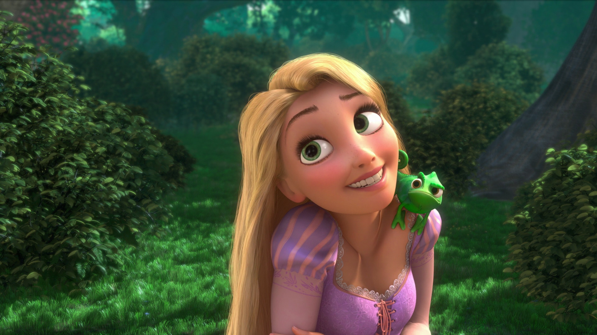

<!Doctype htlm>
<htlm>

  <head>
  <title>Profil de Raiponce</title>
  <meta name="description" content="C'est le profil de Raiponce">
  <meta charset="UTF-8">
  <head>
  <link rel="stylesheet" href="style.css">
</head>
  </head>

  <body>

<div>
  
  <div>
   <h1> Coucou, Moi c'est Raiponce</h1>
   
   Je suis Raiponce, une fille aux cheveux long. Non ! Aux cheveux très très très long. J'ai grandit dans une tour toute mon enfance seule avec ma mère sans jamais pouvoir sortir car elle avait peur de me perdre. Après reflexion enfaite j'ai un ami aussi avec moi, C'est Pascal ! (un caméléon mais chutt) 
  </p>
   <p>
   Moi, j'ai un rêve c'est de voir les lanternes qui s'illuminent chaque année le jour de mon anniversaire.
  </p>
  <li></li>
  <a href="#" class="https://fr.wikipedia.org/wiki/Cam%C3%A9l%C3%A9on_commun"_blank>Découvrez mon ami Pascal</a>
</a>
</div>

<div>
  <h2>Mes Plus Grandes Rencontres 💕 </h2>

   <p> Flynn Rider, de son vrai nom, Eugene est un voleur qui a tenté de voler la couronne royal et s'est caché dans ma tour. Sans gêne je peux le dire, il est finalement tombé amoureux de moi et s'est marié avec moi. ❤️ <p>

   <p> Maximus : C'est le cheval Royal 🐎 protecteur et gentils avec moi mais totalement ennemi Flynn, voleur de la couronne. </p>

</div>

<div>
  <h2>Les Révélations</h2>
  <p> J'ai des pouvoirs.✨ Quand je chante mes cheveux s'illuminent, je peux soigner des blessures ou rajeunir des personnes. ✨ <p>


  <p> Ma mère est une sorcière 🧙‍♀️ et m'a mentit toute les années où j'ai grandit. J'ai été séquestré par elle pour qu'elle profite de mes pouvoirs. <p>

  Je suis enfaite une princesses.👑 La Princesse disparue pour lesquelles les lumières s'élèvent dans le ciel chaque année. 
  </p>
</div>

<div>
  <h2>Mon histoire 📖</h2>
  <p>Mon histoire a été inventée par les frères GRIMM il y a bien longtemps et a été reprise dans un super film Disney en 2010.</p>
</div>


<div>
  <h2>SUIVEZ MES AVENTURES SUR 👇🏼 </h2>
  
  <p>
   <a id="m_Facebook" href="https://www.facebook.com/groups/575329570335039">Facebook </i>
   </a>
  </p>
    
  <p>
    <li></li>
      <a href="https://www.instagram.com/raiponce__disney/?hl=fr">Instagram </i>
      </a>
  </p>

      <li></li>
      <a href="https://www.tiktok.com/@raiponce.09?lang=fr">TikTok </i>
      </a>
</div>


    </div>


</body></html>

